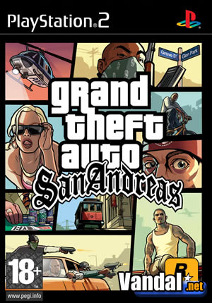
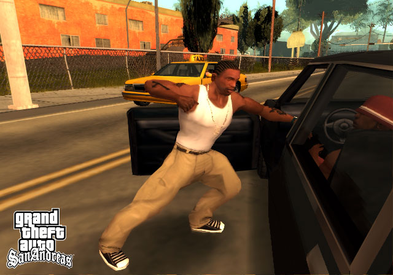
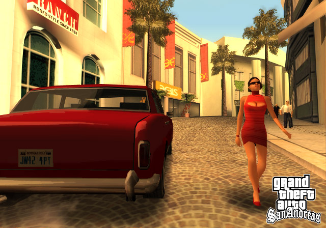
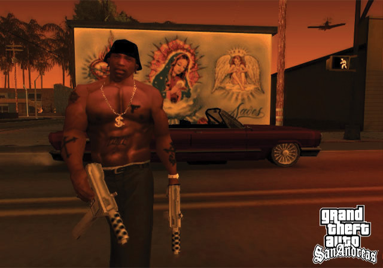
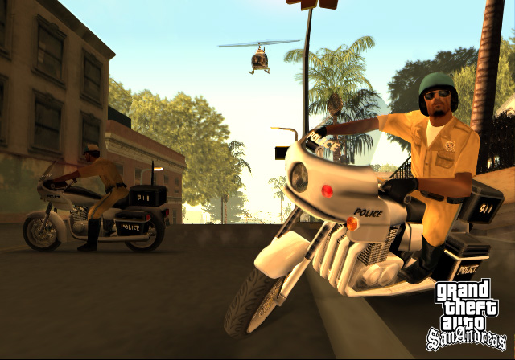

Grand Theft Auto: San Andreas

Descripción
Hace cinco años, Carl Johnson, más conocido como CJ, huyó de las calles de Los Santos, San Andreas, una ciudad destrozada por las bandas, las drogas y la corrupción.
Estamos a principios de los años 90 y CJ se ve obligado a regresar a casa tras el asesinato de su madre. Sin embargo, nada más llegar al barrio, dos policías corruptos lo acusan de homicidio y lo meten en un buen lío.
Ahora tendrá que quedarse en San Andreas, proteger a su familia y recuperar el control de las calles, mientras intenta abrirse camino en el mundo criminal de la ciudad.
Capturas del videojuego




Información del videojuego
| Desarrollador | Plataforma | Fecha de lanzamiento |
|---|---|---|
| Rockstar North | PS4, Xbox One, PC, PS3, Xbox 360, Mac, iOS, PS2, Android, Xbox, Kindle, Windows Phone | 26 de octubre de 2004 |
Mi opinión personal
Estamos ante, probablemente, el mejor GTA que he jugado. La verdad es que de este juego solo puedo decir cosas positivas.
Para empezar, me encanta su ambientación en los años 90. Además, siempre me ha parecido curioso cómo algunos personajes de Grove Street parecen estar inspirados en artistas del rap de aquella época, aunque Rockstar nunca lo haya confirmado oficialmente. Por ejemplo, Ryder recuerda bastante a Eazy-E, Sweet a Ice Cube y Big Smoke a The Notorious B.I.G. (Biggie). Son personajes que, junto con CJ, hacen que Grove Street tenga muchísima personalidad.
También tenemos otras bandas, como los Los Santos Vagos, los Aztecas y nuestros grandes rivales, los Ballas. Todo esto ayuda a crear un mundo mucho más vivo y creíble.
En cuanto a la historia, San Andreas tiene una trama bastante interesante. Empieza muy bien, cuenta con grandes giros argumentales y presenta situaciones que difícilmente te esperarías. Eso sí, también tiene algunos puntos algo extraños, como el caso de Ryder. Parece que hubo problemas entre su actor de doblaje y Rockstar, lo que podría explicar que su historia termine antes de lo previsto. De hecho, llega un momento en el que prácticamente deja de mencionarse.
Pero si hay algo que hace especial a este juego es la cantidad de posibilidades que ofrece. Podemos sacarnos licencias para conducir diferentes vehículos, tener novia, cambiar nuestra ropa, modificar nuestro estado físico, apostar e incluso mandar sicarios a cobrar nuestras deudas. Esto último lo digo por experiencia, porque apostar puede dejarte en números rojos.
Y hablando de las novias, hay una referencia que me encanta: Catalina, prima de César y pareja de Claude, el protagonista de GTA III. Es un personaje completamente desquiciado que acaba dejando a CJ para marcharse con Claude a Liberty City. Allí, como ya sabemos, terminará traicionándolo.
Otro aspecto que me parece una auténtica locura es que contamos con tres ciudades enormes: Los Santos, inspirada en Los Ángeles; San Fierro, inspirada en San Francisco; y Las Venturas, inspirada en Las Vegas. Cada una tiene su propia personalidad y está llena de detalles, actividades y referencias.
Todo esto, junto con el humor negro tan característico de Rockstar, hace que San Andreas sea un juego tremendamente completo y al que podemos dedicarle muchísimas horas.
Y es que, teniendo en cuenta la época en la que salió y que Rockstar ya contaba con la base de GTA Vice City, el salto que consiguieron dar fue impresionante. Para mí, estamos ante uno de los grandes clásicos de la compañía.